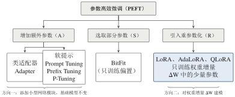
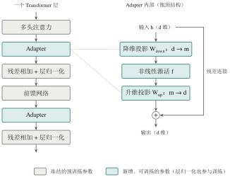
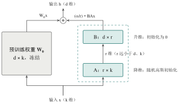
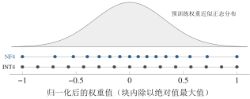
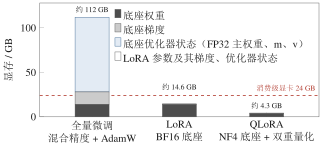

3.7 参数高效微调
全量微调一个 7B 模型，仅模型状态就要约 112 GB 显存；为 100 个客户各微调一份，还要存 100 份完整权重。能不能冻结绝大部分参数，只训练很少一部分，就达到接近全量微调的效果？本节先给出参数高效微调的三类做法，再依次讲 BitFit、Adapter、软提示、LoRA 及其变体 AdaLoRA、QLoRA，最后用例题比较它们的显存。结论是：LoRA 用两个低秩矩阵表示权重的变化量，可训练参数通常不到 1%，训练后能合并回原权重、不增加推理开销；QLoRA 再把冻结的底座量化到 4 位，使单张消费级显卡就能微调 7B 模型。
3.7.1 为什么需要参数高效微调
把预训练模型在下游任务上微调已经成为标准范式，但模型越大，全量微调越难承受：显存开销大——按第 3.5 节的估算，混合精度全量微调 7B 模型仅模型状态就要约 112 GB；存储开销大——每个任务都要保存一份完整模型；容易遗忘——所有参数都被修改，通用能力更容易退化。
参数高效微调（PEFT）也称参数高效迁移学习，做法是固定预训练模型（Pre-trained Language Model，PLM）的大部分参数，只调整很小一部分参数或新增少量参数，达到接近全量微调的效果。由于 PEFT 本质上是在原模型上学一个“增量”，它也被称为增量微调（delta tuning）。
3.7.2 三类方法
PEFT 方法可以分为三类（图 3-12）：
增加额外参数（Addition，A）：加入少量新的可训练参数，原参数全部冻结。又分两小类：类适配器方法在网络内部插入小模块，如 Adapter Tuning；软提示方法在输入或各层前加入可训练的连续向量，如 Prompt Tuning、Prefix Tuning、P-Tuning。
选取部分参数（Selection，S）：不增加参数，只训练原模型中的一小部分，如只训练偏置的 BitFit。
引入重参数化（Reparameterization，R）：把权重的变化量 \(\Delta W\) 用参数更少的形式表示，\(W=W_0+\Delta W\)，如 LoRA 及其变体。
按实现方式也可以分成两个方向：一是添加小型网络模块，基础模型保持不变，只为每个任务训练这些小模块（Adapter、Prefix Tuning、Prompt Tuning）；二是对权重增量建模，不改模型结构，只学习 \(\Delta W\)（Diff Pruning、LoRA）。

图 3-12 参数高效微调方法的分类。箭头表示“包含”关系；最下方的括号是按实现方式的另一种划分，Diff Pruning 等方法也属于方向二
3.7.3 BitFit 与 Adapter Tuning
BitFit 最简单的 PEFT：冻结所有权重矩阵，只训练偏置（bias）[29]。BERT 的偏置参数不到总参数的 0.1%，但在许多中小规模任务上，BitFit 的效果已接近全量微调。局限是许多现代大模型（如 LLaMA）的线性层根本没有偏置项，BitFit 无从下手。
Adapter Tuning 在预训练模型的每一层插入专门用于下游任务的小模块（Adapter），微调时冻结主体，只训练这些模块[28]。如图 3-13，每个 Transformer 层在注意力之后和前馈网络之后各加一个 Adapter，训练时只更新 Adapter 和层归一化参数。每个 Adapter 是一个瓶颈结构：降维投影把 \(d\) 维输入压到 \(m\) 维，经非线性激活后，升维投影再映射回 \(d\) 维，并通过残差连接与输入相加： \[\mathrm{Adapter}(\boldsymbol{h})=\boldsymbol{h}+W_{\mathrm{up}}\,f(W_{\mathrm{down}}\boldsymbol{h}),\qquad W_{\mathrm{down}}\in\mathbb{R}^{m\times d},\ W_{\mathrm{up}}\in\mathbb{R}^{d\times m}. \tag{3-23}\] 通常 \(m\ll d\)，调节 \(m\) 就能控制参数量，每个 Adapter 约 \(2md\) 个参数。残差连接保证：只要把 \(W_{\mathrm{up}}\) 初始化为接近零，Adapter 一开始就近似恒等变换，不会破坏原模型。一般引入 0.5%～5% 的参数，就能达到与全量微调相差不到 1% 的性能；在 BERT 上只训练约 3.6% 的参数，GLUE 得分与全量微调相差约 0.4 个百分点以内。Adapter 的主要缺点是增加推理时延：新增模块串行插在网络中，推理时省不掉，逐 token 生成时这一开销会被放大。

图 3-13 Adapter Tuning 的结构[28]。每个 Transformer 层在注意力和前馈网络之后各插入一个 Adapter；Adapter 先把 d 维输入压到 m 维（m 远小于 d），经非线性激活后再升回 d 维，并与输入相加
3.7.4 软提示方法
第 3.6 节的提示词是人能读懂的离散文本，称为硬提示（hard prompt）。软提示方法把提示变成可训练的连续向量，称为软提示（soft prompt）。
Prompt Tuning[30]：基础模型参数不变，为每个任务训练一小段（如 20 个）“虚拟 token”的嵌入向量，拼在输入最前面，执行该任务时按需加载。软提示长 \(l\)、隐藏维度 \(d\) 时，可训练参数只有 \(l\times d\) 个。模型增大到百亿参数以上时，它的效果逐渐接近全量微调；在较小的模型上差距明显。
Prefix Tuning[31]：在每一层注意力的 Key 和 Value 前面都加一段可训练的前缀向量，相当于在不改变大模型的前提下为每一层的上下文添加合适的“条件”。直接优化前缀容易不稳定，通常先用一个小型多层感知机生成前缀，训练完再丢弃这个网络、只保留前缀。
P-Tuning：用一个小型提示编码器（如 LSTM 或 MLP）生成连续提示，使各虚拟 token 相互关联；P-Tuning v2[32] 借鉴 Prefix Tuning，在每一层都加入提示，在不同规模的模型和更多任务上接近全量微调。
软提示参数量极小、不改模型结构，缺点是占用一部分上下文长度，训练也不如其他方法稳定。
3.7.5 LoRA 与 AdaLoRA
基本思想 LoRA（Low-Rank Adaptation，低秩适配）由 Hu 等人于 2021 年提出[33]，是目前应用最广的 PEFT 方法。它的出发点是：神经网络里有大量用矩阵乘法实现的全连接层，模型适配到具体任务时，权重的变化量不需要满秩，而是具有很低的本征秩（intrinsic rank）。换言之，参数虽多，针对一个任务真正需要调整的“方向”只有少数几个。因此 LoRA 不直接更新 \(W_0\)，而用两个小矩阵的乘积表示变化量： \[W=W_0+\Delta W=W_0+BA,\qquad B\in\mathbb{R}^{d\times r},\ A\in\mathbb{R}^{r\times k},\ r\ll\min(d,k). \tag{3-24}\] 如图 3-14，LoRA 在原权重旁加一条旁路：\(A\) 负责降维，把输入从 \(k\) 维压到 \(r\) 维；\(B\) 负责升维，再映射回 \(d\) 维；中间维度 \(r\) 就是“秩”，用来模拟本征秩。前向计算变为 \[\boldsymbol{h}=W_0\boldsymbol{x}+\frac{\alpha}{r}BA\boldsymbol{x}, \tag{3-25}\] \(\alpha\) 是缩放系数，用来在改变 \(r\) 时保持更新幅度大致稳定。训练时 \(W_0\) 冻结，只有 \(A\)、\(B\) 接收梯度。\(A\) 用随机高斯分布初始化、\(B\) 初始化为零，于是训练开始时 \(BA=0\)，输出与原模型完全一致，微调从“不破坏原模型”的起点平稳开始。

图 3-14 LoRA 的结构[33]。冻结的预训练权重旁边增加一条低秩旁路：A 把输入从 k 维压到 r 维，B 再升回 d 维；训练开始时 B = 0，输出与原模型完全相同。训练结束后可把 (α/r)·BA 加回 W0，推理时没有额外开销
参数量 原权重有 \(d\times k\) 个参数，LoRA 只训练 \(r(d+k)\) 个。\(d=k=4096\)、\(r=8\) 时，比例为 \(\bigl(8\times(4096+4096)\bigr)\div(4096\times4096)=65\,536\div16\,777\,216\approx0.39\%\)。
LoRA 的优点 训练开销小：可训练参数通常不到原模型的 1%，它们的梯度和优化器状态几乎可以忽略；LoRA 论文报告，在 GPT-3 175B 上可训练参数减少约 10 000 倍，训练时的 GPU 显存需求降为约三分之一。效果好：在众多数据集上与全量微调相当，有时更好。无额外推理时延：训练完成后把 \(\frac{\alpha}{r}BA\) 加到 \(W_0\) 上，合并成一个形状不变的矩阵，推理计算量与原模型完全相同——这是它相对 Adapter 的重要优势。便于多任务切换：每个任务只需保存一组几十 MB 的 \(A\)、\(B\)，同一个底座可以按需加载不同的 LoRA 模块。
例 3-6 LoRA 的可训练参数量
对 LLaMA-7B（32 层，\(d=4096\)，前馈网络中间维度 \(d_{\mathrm{ff}}=11\,008\)）应用 \(r=8\) 的 LoRA。计算两种设置下的可训练参数量：(1) 只作用于注意力的 \(W_Q\)、\(W_V\)（LoRA 原论文的设置）；(2) 作用于全部 7 个线性层（\(W_Q\)、\(W_K\)、\(W_V\)、\(W_O\) 和前馈网络的三个矩阵）。
1 & 一个 \(4096\times4096\) 矩阵 & \(8\times(4096+4096)\) & 65 536 & 式 （3-24），\(r(d+k)\)
2 & 设置 (1) 全模型 & \(2\times65\,536\times32\) & \(4.2\times10^{6}\) & 每层 2 个矩阵，共 32 层
3 & 设置 (1) 占比 & \((4.2\times10^{6})\div(6.7\times10^{9})\) & 0.06% & 总参数见例 3-2
4 & 注意力 4 个矩阵 & \(4\times65\,536\) & 262 144 & 步骤 1 × 4
5 & 一个前馈矩阵 & \(8\times(4096+11\,008)\) & 120 832 & \(4096\times11\,008\) 或其转置
6 & 前馈 3 个矩阵 & \(3\times120\,832\) & 362 496 & SwiGLU 有三个矩阵
7 & 设置 (2) 全模型 & \((262\,144+362\,496)\times32\) & \(2.0\times10^{7}\) & 每层 624 640 个，共 32 层
8 & 设置 (2) 占比 & \((2.0\times10^{7})\div(6.7\times10^{9})\) & 0.3% & 同步骤 3
数据流向每个矩阵的形状 \((d,k)\) 与秩 \(r\) → 每矩阵 \(r(d+k)\) → 乘每层矩阵数 → 乘层数 → 除以总参数量。 若把秩提高到 \(r=16\)，参数量翻倍，设置 (2) 约为 4000 万个，这是后面显存对比所用的配置。
AdaLoRA LoRA 给所有被适配的矩阵设定相同的秩 \(r\)，但不同层、不同矩阵对任务的重要性不同。AdaLoRA（Adaptive LoRA）据此动态分配秩[34]：给关键的增量矩阵分配较高的秩，以捕捉更精细、更具任务特性的信息；降低次要矩阵的秩，以防过拟合、节省预算。具体做法是以奇异值分解（Singular Value Decomposition，SVD）的形式参数化增量： \[\Delta W=P\Lambda Q,\qquad P\in\mathbb{R}^{d\times r},\ \Lambda=\mathrm{diag}(\lambda_1,\dots,\lambda_r),\ Q\in\mathbb{R}^{r\times k}, \tag{3-26}\] 训练中按重要性指标把不重要的奇异值 \(\lambda_i\) 置零，但保留对应的奇异向量，以便以后需要时恢复。对大矩阵做精确 SVD 代价很高，AdaLoRA 并不真正分解，而是在损失中加一个正则项约束 \(P\)、\(Q\) 近似正交： \[R(P,Q)=\lVert P^{\top}P-I\rVert_F^{2}+\lVert QQ^{\top}-I\rVert_F^{2}, \tag{3-27}\] 既省去了大量 SVD 计算，又稳定了训练。
3.7.6 QLoRA：把冻结的底座量化到 4 位
LoRA 大幅减少了梯度和优化器状态，但冻结的底座仍以 16 位加载：7B 模型约 14 GB，65B 模型约 130 GB。QLoRA（Quantized LoRA）[35]的核心是：把冻结的底座量化到 4 位存储，在其上训练 16 位的 LoRA 模块。前向和反向时，4 位权重被临时反量化为 BF16 参与运算，梯度只流向 LoRA 参数。它引入了三项技术（量化的一般原理见第 3.10 节）。
4 位 NormalFloat（NF4） 预训练权重近似服从均值为零的正态分布。普通 4 位整数（INT4）把量化等级均匀分布在取值区间上，而 NF4 按标准正态分布的分位数设置 16 个等级，并保证 0 能被精确表示，使每个等级覆盖的权重数大致相同（图 3-15）。对正态分布的权重，这是信息论意义上最优的 4 位数据类型，实测效果优于 INT4 和 4 位浮点（FP4）。量化时权重按 64 个一块处理：先用块内绝对值最大值 \(c\) 把权重缩放到 \([-1,1]\)，再映射到最近的 NF4 等级 \(q_j\)，只存 4 位编号；反量化时 \(\hat{w}=c\cdot q_j\)。

图 3-15 INT4 与 NF4 的量化等级（各点为可表示的值）。INT4 取对称区间 −7～7，共 15 个等级，等间距分布；NF4 的 16 个等级按标准正态分布的分位数设置，在权重密集的 0 附近更密、在两端更疏，使每个等级覆盖的权重数量大致相同
双重量化 每 64 个权重要额外存一个 32 位缩放常数 \(c\)，平均每参数多占 \(32/64=0.5\) 位。双重量化（double quantization）把这些常数再量化一次（每 256 个常数为一组，常数本身量化为 8 位，每组再多存一个 32 位缩放因子），额外开销降到约 \(8/64+32/(64\times256)\approx0.127\) 位/参数。对 65B 模型，这一项就能节省约 3 GB。
分页优化器 训练中偶尔会因长序列等原因出现显存峰值而溢出。分页优化器（paged optimizer）利用 NVIDIA 的统一内存特性，在显存紧张时自动把优化器状态换出到 CPU 内存，需要时再换回，避免训练中断。
借助这些技术，QLoRA 首次在单张 48 GB 显卡上微调了 650 亿参数的模型，效果与 16 位全量微调基本相当；用它训练的 Guanaco 在当时的 Vicuna 对话基准上达到 ChatGPT 约 99% 的水平。QLoRA 让个人开发者和学生也能在消费级显卡上微调大模型。
3.7.7 显存对比
例 3-7 全量微调与 PEFT 的显存
微调一个 7B 模型，不计激活值。基础模型以 FP32 加载；PEFT 新增的可训练参数为原模型的 2.5%，同样以 FP32 训练、使用 AdamW。比较全量微调与 PEFT 所需显存。
1 & 底座权重 \(M\) & \((7\times10^{9}\times4)\div(32/32)\) & 28 GB & FP32 每参数 4 字节
2 & 全量微调 & \(28+28+2\times28\) & 112 GB & 权重 + 梯度 + AdamW 的 \(\boldsymbol{m}\)、\(\boldsymbol{v}\)
3 & 适配器权重 & \(28\times2.5\%\) & 0.7 GB & 新增参数 \(1.75\times10^{8}\) 个
4 & 适配器梯度 & \(28\times2.5\%\) & 0.7 GB & 只有适配器有梯度，底座冻结
5a & 优化器（AdamW 两个状态） & \(2\times0.7\) & 1.4 GB & \(\boldsymbol{m}\)、\(\boldsymbol{v}\) 各一份 FP32
5b & 优化器（按 4 倍计） & \(28\times4\times2.5\%\) & 2.8 GB & 另一种口径，见下文
6a & PEFT 合计 & \(28+0.7+0.7+1.4\) & 30.8 GB & 步骤 1、3、4、5a
6b & PEFT 合计 & \(28+0.7+0.7+2.8\) & 32.2 GB & 步骤 1、3、4、5b
数据流向底座大小 \(M\) → 全量微调 \(4M\)；底座冻结只占 \(M\) → 适配器 = \(M\times2.5\%\) → 适配器的权重、梯度、优化器 → 与底座相加。 两种口径需要说明。(a) 按 AdamW 保存 \(\boldsymbol{m}\)、\(\boldsymbol{v}\) 两个 FP32 状态计，优化器是适配器权重的 2 倍，合计 30.8 GB，约为全量微调的 27%，这是本书采用的口径。(b) 若把优化器状态按“适配器大小 × 4”计，各项相加是 32.2 GB；但 AdamW 的 \(\boldsymbol{m}\)、\(\boldsymbol{v}\) 只需 2 倍，4 倍没有依据。估算时写清优化器状态按几倍计，结果与口径一致即可。无论哪种口径，结论相同：PEFT 省掉的是底座的梯度和优化器状态，剩下的主要是底座权重本身。
既然剩下的大头是底座权重，把底座改用 BF16 加载就能再减半，改用 NF4 能再减到约四分之一。图 3-16 比较了更贴近实际的三种配置：混合精度全量微调约 112 GB；BF16 底座的 LoRA 为 \(14+(4\times10^{7}\times16)\div10^{9}\approx14.6\,\text{GB}\)；NF4 底座的 QLoRA 为 \((7\times10^{9}\times4.127)\div8\div10^{9}+0.64\approx4.3\,\text{GB}\)。

图 3-16 微调 7B 模型所需的模型状态显存（不含激活值与框架开销）。LoRA 作用于全部线性层，\(r=16\)，约 4000 万个可训练参数，按 16 字节/参数计；NF4 底座按每参数约 4.127 位计
辨析
PEFT 不会减少激活值。底座虽然冻结，反向传播时梯度仍要穿过整个网络才能到达各层的 LoRA 模块，激活值必须照常保存。实际微调时，通常还要配合激活重计算来控制显存。
3.7.8 方法比较
表 3-11 参数高效微调方法的比较
| 方法 | 类别 | 可训练参数位置 | 典型占比 | 推理开销 | 特点 |
|---|---|---|---|---|---|
| BitFit | S | 原有偏置项 | \(<0.1\%\) | 不增加 | 最简单；依赖模型含偏置 |
| Adapter | A | 每层插入的瓶颈模块 | 0.5%～5% | 增加（串行模块） | 效果稳定；有额外时延 |
| Prompt Tuning | A | 输入前的软提示 | \(<0.01\%\) | 略增（占上下文） | 参数最少；小模型上效果较差 |
| Prefix / P-Tuning v2 | A | 每层的前缀向量（深层提示） | 约 0.1%～1% | 略增（占上下文） | 适用面更广；训练不够稳定 |
| LoRA | R | 权重旁路的低秩矩阵 | 0.05%～1% | 不增加（可合并） | 效果好、使用最广 |
| AdaLoRA | R | 秩自适应的增量矩阵 | 与 LoRA 相当 | 不增加（可合并） | 按重要性分配参数预算 |
| QLoRA | R + 量化 | 4 位底座上的 LoRA | 与 LoRA 相当 | LoRA 可合并；底座若保持 4 位则需量化推理 | 显存最省，单卡可调大模型 |
表 3-11 总结了各方法。它们的共同思路是“冻结大部分，只学一点点”。当前实践中最常用的是 LoRA 及其量化版本 QLoRA：不改变模型结构、不增加推理开销，又把微调大模型的门槛从多卡集群降到单张显卡。
本节要点
PEFT 分 A（加参数：Adapter、软提示）、S（选参数：BitFit）、R（重参数化：LoRA 系列）三类。
LoRA：\(\Delta W=BA\)，每矩阵 \(r(d+k)\) 个参数，\(B\) 初始化为零，训练后可合并。
QLoRA = NF4 底座 + 双重量化 + 分页优化器 + LoRA；7B 模型约 4 GB 模型状态。
案例进度：课程问答模型用 QLoRA（\(r=16\)，全部线性层）做指令微调，一张 24 GB 显卡即可。